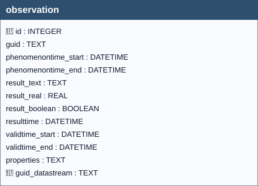

An Observation provides a value for an ObservedProperty of a Feature, as observed by a Sensor. This value can be of any type, as described by the resultType of the Datastream that Observation is associated with. 1
SensorThings API 2.0 (23-019) (DRAFT),
version 23-019.
https://hylkevds.github.io/23-019/23-019.html
datastream.typeTwo BEFORE triggers (INSERT and UPDATE) apply expected structure and domain rules to the observation’s result, according to the type defined in the linked datastream row:
observation_bi_type_constraints (BEFORE INSERT)observation_bu_type_constraints (BEFORE UPDATE OF result_*, iddatastream)The rules by type are:
result_real NOT NULL; result_text and result_boolean must be NULL.value_min is not NULL → result_real >= value_min;value_max is not NULL → result_real <= value_max.result_text NOT NULL; result_real and result_boolean must be NULL.result_text must exist as codelist.id in the collection equal to datastream.codespace (join by collection).result_boolean NOT NULL with value 0 or 1; result_text and result_real must be NULL.result_real NOT NULL, but it must be integer in value (comparison result_real = CAST(result_real AS INTEGER)). result_text and result_boolean must be NULL.value_min is not NULL → result_real >= value_min;value_max is not NULL → result_real <= value_max.result_text NOT NULL; result_real and result_boolean must be NULL.Although they are not triggers “of the observation table,” two triggers on datastream ensure that any changes to value_min/value_max do not make existing observations inconsistent:
datastream_bu_bounds_validate_observations (BEFORE UPDATE OF value_min, value_max) blocks the update if there exist observations (for that datastream) with result_real outside the new limits. Applies to types Quantity and Count.datastream_bi/bu_bounds_consistency prevent setting value_min > value_max when both are non-NULL.datastream_bi/bu_count_bounds_are_integers enforce that the extrema, if present, are integers in value (the “integer” form is verified with numeric cast, e.g., 3.0 is accepted).This family therefore guarantees semantic stability: you cannot tighten a series’ admissibility interval in such a way as to “expel” measurements already acquired.
Important
The triggers use RAISE(ABORT, '...') with specific messages (e.g., “Type Quantity: result_real is below value_min.”, “Type Category: result_text must exist in codelist…”), facilitating diagnosis during data ingestion and ETL automation.
To maintain in datastream a consistent summary of the temporal coverage of its observations, there are three triggers that recompute the fields datastream.phenomenontime_start (MIN) and datastream.phenomenontime_end (MAX) with respect to all related rows in observation:
observation_ai_recalc_ds_times (AFTER INSERT): upon a new insert, recomputes MIN/MAX on the datastream of NEW.iddatastream.observation_au_recalc_ds_times (AFTER UPDATE OF phenomenontime_*, iddatastream): recomputes for the new datastream; if the observation has been moved across series, it also recomputes for the old datastream.observation_ad_recalc_ds_times (AFTER DELETE): upon deletion, recomputes MIN/MAX on the datastream of OLD.iddatastream.To support these recurring aggregations, recommended indexes are defined:
idx_observation_ds_times (iddatastream, phenomenontime_start, phenomenontime_end)Warning
Records that do not comply with the defined constraints shall be rejected by the system and shall not be persisted in the GeoPackage.

observation| Name | Type | Constraints | Description |
|---|---|---|---|
id |
INTEGER |
PRIMARY KEY | A unique, read-only attribute that serves as an identifier for the entity. |
guid |
TEXT |
Universally unique identifier. | |
phenomenontime_start |
DATETIME |
NOT NULL, DEFAULT strftime(‘%Y-%m-%dT%H:%M:%fZ’, ‘now’) | The time instant when the Observation happens, or the start time if it happens over a period. |
phenomenontime_end |
DATETIME |
The end time if the Observation happens over a period. | |
result_text |
TEXT |
The estimated value of an ObservedProperty from the Observation, when the Type is Category or Text. | |
result_real |
REAL |
The estimated value of an ObservedProperty from the Observation, when the Type is Quantity or Count. | |
result_boolean |
BOOLEAN |
The estimated value of an ObservedProperty from the Observation, when the Type is Boolean. | |
resulttime |
DATETIME |
The time of the Observation’s result was generated. | |
validtime_start |
DATETIME |
The start time of the period during which the result may be used. | |
validtime_end |
DATETIME |
The end time of the period during which the result may be used. | |
properties |
TEXT |
mime type: ‘application/json’. A JSON Object containing user-annotated properties as key-value pairs. | |
guid_datastream |
TEXT |
NOT NULL | Foreign key to the Datstream table, guid field. |
In this table, the primary key is the id field (integer, auto-incrementing).
There is also a text field named GUID, which stores a UUID (Universally Unique Identifier) compliant with RFC 4122.
Although GUID is not mandatory at the schema level (it is not declared NOT NULL), its functional requirement is enforced by two triggers:
Any foreign keys (FK) from other tables reference this table’s GUID field rather than the id field, ensuring stable and interoperable references across datasets and database instances.
Note
GUID management is handled by database triggers, which ensure their automatic generation at the time of record insertion, without any user involvement.
observation.guid_datastream → datastream.guid (ON UPDATE CASCADE, ON DELETE CASCADE)
datastream cascades to observation.| Name | Unique | Columns | Origin | Partial |
|---|---|---|---|---|
idx_observation_guid_datastream |
No | guid_datastream |
c |
No |
For every trigger you will find:
observationguidWhen they run: AFTER INSERT (per row)
What they do: If NEW.guid is NULL, generates a lowercase UUID (v4‑like) and sets it on the inserted row.
If the check passes: The row is updated with the generated GUID; insert proceeds (no message).
If the check fails: No failure path — it only assigns when GUID is missing.
observationguidupdateWhen they run: AFTER UPDATE OF guid (per row)
What they do: Compares NEW.guid with OLD.guid to block GUID changes.
If the check passes: If NEW.guid = OLD.guid, the update proceeds.
If the check fails: Aborts with: Cannot update guid column.
observation_bi_type_constraintsWhen they run: BEFORE INSERT (per row)
What they do: Reads NEW.result_text, NEW.result_real, NEW.result_boolean, NEW.guid_datastream; looks up the linked datastream.type, value_min, value_max, codespace; for Category, checks result_text ∈ codelist.id where codelist.collection = datastream.codespace.
If the check passes: Insert proceeds (shape, bounds and membership satisfied for the given datastream.type).
If the check fails: Aborts with one of (depending on datastream.type):
Type Quantity: result_real must be NOT NULL; result_text and result_boolean must be NULL.;
Type Quantity: result_real is below value_min.;
Type Quantity: result_real exceeds value_max.;
Type Category: result_text must be NOT NULL; result_real and result_boolean must be NULL.;
Type Category: result_text must exist in codelist.id for the collection equal to the datastream codespace.;
Type Boolean: result_boolean must be 0 or 1; result_text and result_real must be NULL.;
Type Count: result_real must be an integer; result_text and result_boolean must be NULL.;
Type Count: result_real is below value_min.;
Type Count: result_real exceeds value_max.;
Type Text: result_text must be NOT NULL; result_real and result_boolean must be NULL.
observation_bu_type_constraintsWhen they run: BEFORE UPDATE OF result_text, result_real, result_boolean, guid_datastream (per row)
What they do: Re‑applies the same shape/bounds/membership checks as the INSERT trigger, against the (possibly changed) datastream.
If the check passes: Update proceeds.
If the check fails: Aborts with the same messages listed for observation_bi_type_constraints.
observation_bi_result_text_in_codespaceWhen they run: BEFORE INSERT (per row)
What they do: Only if NEW.result_text IS NOT NULL and the linked datastream.type = 'Category': checks membership of NEW.result_text in codelist.id where collection = datastream.codespace.
If the check passes: Insert proceeds.
If the check fails: Aborts with: Insert denied: result_text must exist in codelist.id within the collection equal to the linked datastream codespace (type=Category).
observation_bu_result_text_in_codespaceWhen they run: BEFORE INSERT (per row) (note: despite the “_bu_” name, it’s defined as BEFORE INSERT in the DDL)
What they do: Same condition and membership check as the previous trigger.
If the check passes: Insert proceeds.
If the check fails: Aborts with: Insert denied: result_text must exist in codelist.id within the collection equal to the linked datastream codespace (type=Category).
observation_ai_recalc_ds_timesWhen they run: AFTER INSERT (per row)
What they do: Recomputes the parent datastream’s time range using all observations for NEW.guid_datastream: phenomenontime_start = MIN(phenomenontime_start); phenomenontime_end = MAX(COALESCE(phenomenontime_end, phenomenontime_start)).
If the check passes: Updates the datastream range; insert succeeds.
If the check fails: No specific failure path (ordinary DML errors aside).
observation_au_recalc_ds_timesWhen they run: AFTER UPDATE OF phenomenontime_start, phenomenontime_end, guid_datastream (per row)
What they do: Recomputes the range for the new guid_datastream; if the row moved between datastreams, also recomputes the old one.
If the check passes: Updates the affected datastream(s); update succeeds.
If the check fails: No specific failure path.
observation_ad_recalc_ds_timesWhen they run: AFTER DELETE (per row)
What they do: Recomputes the parent datastream’s time range from remaining observations for OLD.guid_datastream.
If the check passes: Updates the datastream range; delete succeeds.
If the check fails: No specific failure path.
Hylke van der Schaaf — Open Geospatial Consortium (OGC), ↩